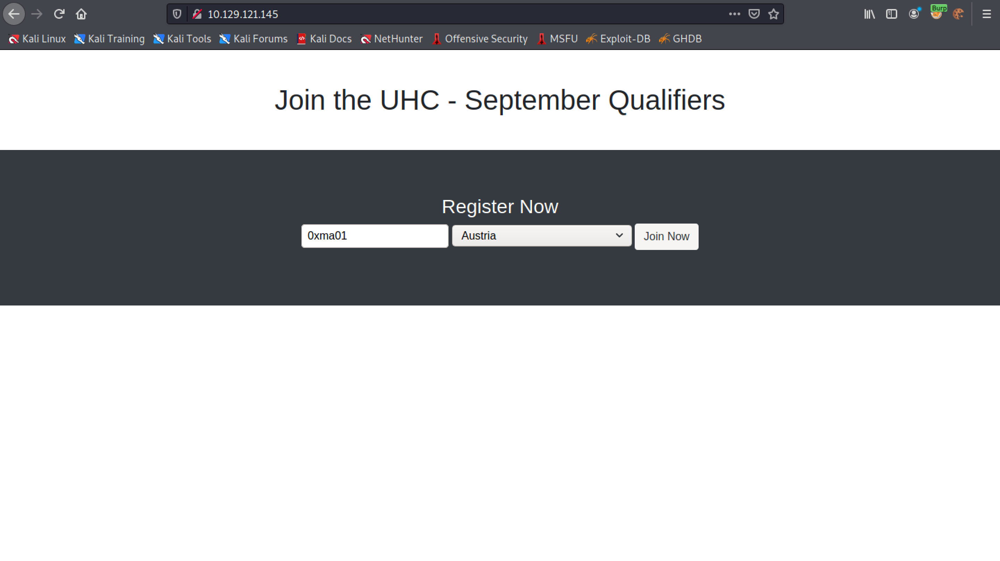
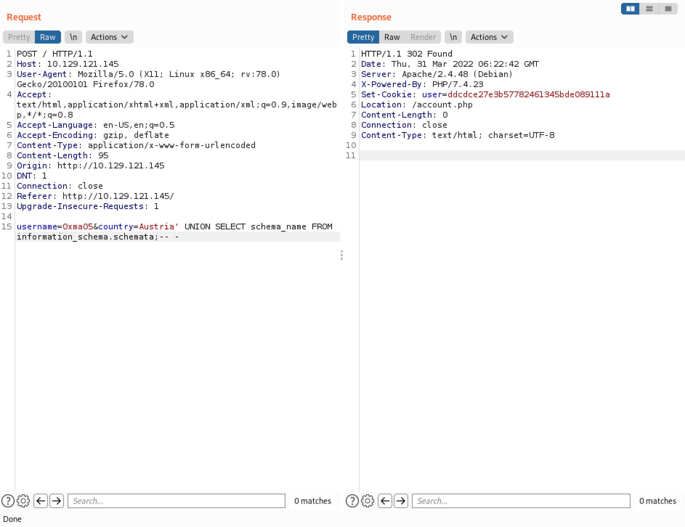

April 12, 2022
Second Order SQL Injection - Example 2
In this tutorial, we will see how to perform a second order SQL injection. The SQL injection will be performed on an item from the drop down list which the developer forgot to filter for bad characters. After revealing the contents of the database, we will see how to write a PHP file on the web server and gain reverse shell on the box.
This is the main page of the website. It takes a username and we can select our country from the drop-down list.
Let's enter a username and select a country.
Once the username is submitted, it lists all the users in that particular country.
The HTTP request that is used to submit a username in Burp Suite. It takes two paramters: username and country.
Upon receiving the HTTP request, the web application sends us a 302 redirect to "/account.php". Note that it also sets a cookie which is the MD5 sum of the username.
Next, a GET request is sent to "/account.php" with the cookie sent in the 302 redirect response.
Finally, the 200 response which displays the "Welcome" message.
Running the username through md5sum shows the MD5 sum of the username which is the same as the cookie sent in the GET request.
Now that we have an understanding of the web application, let's try to perform our SQL injection attack. Right-click on the HTTP request that is used to submit the username and country and send it to Burp Repeater.
Since the country name is not submitted by the user in an input box, the developer hasn't filtered it for bad characters. Let's add a single-quote (') after the country name to see how the web application handles it.

Following the redirect leads to "/account.php".
We can make a MD5 sum of the username using the terminal or we can also copy this MD5 sum from the "Set-Cookie" response header.
The next step is to right-click on the page and click on "Inspect". Let's paste in the MD5 sum of the user for the cookie and reload the page. Modifying the cookie of the page is important because we need to access the page to which this particular user belongs (in this case it is Austria).
Note the single quote (') after the country name: Austria. It also reveals an error. This can be an indication of a SQL injection vulnerability.
The assumption is that this is the SQL query used to retrieve the usernames that belong to a particular country. The query returns one column called "username". If one column is returned then using a UNION statement with one value shouldn't return an error.
Let's test this theory by adding a UNION statement with one value and send the request.
Again, it is important to modify the cookie so we could access the users for Austria.
We can see that "1" is returned back to us. It is an indication of a successful UNION-based SQL injection.
Let's see if we can return a string.
Good. 0xma is returned back to us.
The user() function returns the current user that has access to the database.
The user with which we are accessing the database is "uhc".
It reveals the databases in the system.
The system has four databases.
It displays the table names in the "registration" database.

The "registration" database has one table in it called "registration".
It displays the column names in the "registration" table.

The "registration" table has four columns in it: username, userhash, country and regtime.
It displays the contents of the "username" column.
The usernames in the "registration" table.
Next, let's find out what privileges does the "uhc" user have on the box.
It lists all the privileges of the "uhc" user. One of the important privileges is the "CREATE" privilege, which allows us to write files on the web server.

It writes a PHP web shell on the target which will allow us to execute commands via the "cmd" parameter.
Trying to access the web shell displays a warning. The web shell requires a parameter with a command to be executed.
It runs the id command. We have access to the web server as the "www-data" user.
Let's send this request to Burp Repeater so that we could easily execute other commands.
It is a simple Bash command that will give us a reverse shell.
However, it is important to URL encode the command before sending it to the web server.
Send the URL encoded command.
A reverse shell is received from the web server.
It also possible to run commands from the terminal using curl.
Command execution is successful and a reverse shell is received from the web server.
Our next goal is to automate this SQL injection technique. This Python script prompts us to enter a username to register, and also the SQL query that we want to run.
Note that the username that is registered and the SQL query that is executed is separated by a colon (:).
The Python script sends all the requests through Burp Suite.
This is another variation of the above Python script. This script doesn't prompt us to enter a username, instead it randomly generates a string and registers that as our username.
These are the users which the script have registered on the web application while executing SQL queries.
I want to show another technique that I learned from ippsec's walkthrough. This technique involves creating a Flask proxy server that can be accessed on the localhost and it forwards our traffic to the target.
Flask proxy server is running on port 80.
Accessing the localhost from the browser returns "Web App with Python Flask!".
The Flask proxy shows that it received a connection from the localhost.
It reads the "country" parameter from the GET request and displays it.
Flask proxy server is running on port 80.

Note that "0xma" is passed as the country name and it gets displayed.
The Flask proxy shows that it received a connection from the localhost with a "country" parameter.
Let's modify the script to generate a random string for the username that it will register. The country name will be taken from the GET request.
Flask proxy server is running on port 80.
Note that it accepts a country name from URL and sends a randomly generated username to the web application.
The Flask proxy shows that it received a connection from the localhost with a "country" parameter.
Let's capture the request in Burp Intercept and save it to a file.
It is saved as "reg_request".
It is time to run sqlmap using the captured request. It detects the SQL injection vulnerability and will allow us to dump the contents of the database if we choose to do so.
And at last, it is the PHP script on the web server that registers the user.
If you liked reading this article, you can follow me on Twitter: mujtabareads.
- SQL Injection - Example 1
- XSS (Cross-Site Scripting) - Example 1
- Second Order SQL Injection - Example 1
- Server Side Template Injection (SSTI) - Example 1
- Node Cookie Deserialization Command Injection
- XXE Injection
- NoSQL Authentication Bypass
- WPAdmin Shell Upload
- Reverse Shell in WordPress via Theme (Template) Edit Feature
- Reverse Shell in WordPress via Edit Plugin Feature
- Escalate Privileges via pip
- Escalate Privileges by Modifying the /etc/passwd File
- wp_admin_shell_upload
- Extract Passwords with LaZagne
- Bruteforce Windows Server SMB Credentials with Medusa
- Brute Force Windows Server SMB Credentials with Hydra
- Brute Force Windows Server SMB Credentials with NCrack
- Brute Force Windows Server SMB Credentials with CrackMapExec
- Brute Force Windows Server SMB Credentials with Metasploit
- Exploit PrintNightmare